The Phantom of the XY-Plane
The Geometry of Quadratic Functions and their Complex Roots
I recently realized that I had never learned any kind of geometric intuition for the complex roots of quadratic functions. That seemed odd to me. Not that I needed one neccesarily. I was always happy to just accept complex roots as a consequence of the algebra and get on with my life. But it still seemed strange.
The geometric meaning of real roots is easy: It’s just the points where the function crosses the x-axis. Why didn’t I have—or why was I never taught—a similarly straight-forward geometric interpretation for complex roots? Was it just that there wasn’t one? That didn’t seem right.
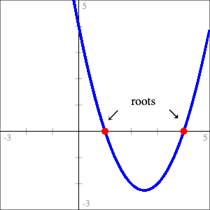 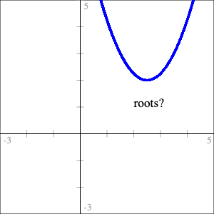
Once I’d thought to ask the question, finding one wasn’t all that hard. In hindsight it actually seems pretty obvious. My first thought was, “hey, that’s really neat!” followed almost immediately by, “well of course that’s what it is. What else could it possibly have been? Duh.”
It seemed so obvious that I seriously considered not writing this at all. Maybe it is really obvious and I’ve just somehow managed to miss it entirely for twenty-odd years. That’s entirely possible but, in the end, if I’ve missed it, probably other people have too and hopefully someone finds it interesting.
There’s more to see if you’ve the got the time or inclination but I don’t want to waste anybody’s time so I’ll cut to the chase.
Geometric Interpretation of Complex Roots - The Phantom Parabola
A quadratic function can be thought of as having a “phantom”—or imaginary—parabola associated with it. For quadratic function \(f\) with minimum (or maximum) point at coordinates \((x_{min}, y_{min})\), the phantom is constructed by reflecting \(f\) across the line \(y = y_{min}\) and then translating so it’s centered on the y-axis.
Then \(f\) has complex (or purely imaginary) roots if and only if its phantom crosses the x-axis: The real part of the solution is \(x_{min}\); the coefficients of the imaginary parts are the roots of the phantom.
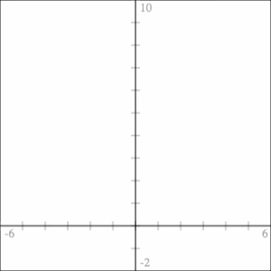
Finding complex roots by constructing the phantom for
\(f(x) = x^2 - 2x + 5\)
If that’s all you’re interested in or have time for then we’re done! But if you want to come along for the ride of me figuring it out and/or a rough idea of how I might wish this subject were taught, read on!
Table of Contents
The Geometry of Quadratic Functions
When we were first introduced to quadratics at my school we spent a bit of time graphing, transforming and translating them around the plane. But not much. I don’t think we ever really referenced the actual geometry of parabolas again. It was all algebra, all the time.
When it was time to start finding roots we naturally started with functions that had real roots. The very first technique we learned was factoring the function into a pair of binomials, \((x - r_1)(x - r_2)\), from which we could see the roots were \(r_1\) and \(r_2\). Once we got good at factoring, we met quadratics that were not easily factored and learned about completing the square. And once we’d well and truly mastered that, we were walked through how to use it to derive the quadratic formula. We weren’t actually required to know how to derive the quadratic formula though. We were just told to memorize it. Missing from this list is a way to find roots without using any of those methods but just a few simple geometric facts about quadratics.
The Simplest Quadratic Formula (real roots)
There’s the quadratic formula and there’s even a simple quadratic formula; I propose the “simplest” quadratic formula. At least for quadratics of the form \(f(x) = x^2 + bx + c\). It’s so simple, in fact, that I feel like it’s kind of a, “missing the forest for the trees,” situation. The derivation of the simple quadratic formula I just linked to uses this fact but just drives right on past without pointing out the relevant geometry. Or perhaps the relevant geometry just doesn’t seem relevant.
The Simplest Quadratic Formula
For quadratic function \(f(x) = x^2 + bx + c\), the real roots are horizontally symmetric around the function’s minimum point. The horizontal distance from the minimum to a root is the square root of the minimum point’s vertical distance below the x-axis.
If the function’s minimum point has coordinates \((x_{min}, y_{min})\) then it’s roots are found at:
\begin{align} \label{eq:simplest-quad-formula} x &= x_{min} \pm \sqrt{-y_{min}} \end{align}It’s the square root of \(-y_{min}\) because for quadratics of the given form with real roots, \(y_{min}\) will always be below the x-axis—always negative—so \(\sqrt{-y_{min}}\) will always be a real rather than imaginary number.
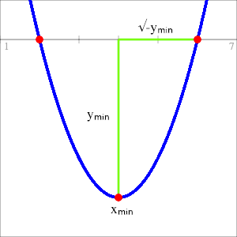
Figure 1:
Using the function’s minimum as a landmark to find real roots.
We’re already getting into, “isn’t that kind of obvious?” territory. I mean, it’s right there staring us in the face. But for some reason this was never presented, at least in my school, as a way to find the roots.
I say this is the simplest quadratic formula not just because it has fewer terms than the others, which it does, but because those terms are related to a significant geometric property of the function which makes it more than just a mish-mash of symbols to memorize. It’s so simple that even if students somehow manage to forget it, they can derive it for themselves as long as they can remember the basic idea of using the minimum as a landmark and sketch some version of Figure 1.
Of course, all of this begs the question of how to actually find the minimum but that’s actually pretty easy. Just a bit more geometric reasoning will get us there.
First of all, \(y_{min}\) is just \(f(x_{min})\) so we can rewrite (\ref{eq:simplest-quad-formula}) as
\begin{align*} x = x_{min} \pm \sqrt{-f(x_{min})} \end{align*}so the only thing we actually need to find is \(x_{min}\).
Since quadratics are symmetric \(x_{min}\) will always be the halfway between the real roots \(r_1\) and \(r_2\). That is,
\begin{align} \label{eq:root-average} x_{min} = \frac{r_1 + r_2}{2}. \end{align}The function itself can be constructed by multiplying binomials,
\begin{align} f(x) &= (x - r_1)(x - r_2) \nonumber \\ \label{fn:quad-from-roots} &= x^2 - (r_1 + r_2)x + r_1r_2 \end{align}which gives a quadratic of the same form as the one used to construct (\ref{eq:simplest-quad-formula}). From (\ref{fn:quad-from-roots}) we have the coefficient
\begin{align*} b = -(r_1 + r_2). \end{align*}Dividing both sides by \(-2\) gives
\begin{align*} \frac{b}{-2} = \frac{r_1 + r_2}{2}. \end{align*}So by (\ref{eq:root-average}),
\begin{align} \label{def:x-min} x_{min} = \frac{-b}{2}. \end{align}So you have some quadratic \(f\) and need to find it’s roots? No problem:
Using the “Simplest” Quadratic Formula
| 1. | Divide \(b\) by \(-2\). (Find \(x_{min}\).) |
| 2. | Plug the result of step 1 into \(f\). (Find \(y_{min}\).) |
| 3. | Multiply that result by \(-1\) and take the square root. (Horizontal distance to a root.) |
| 4. | Roots are at the result of step 1, plus or minus the result of step 3. (\(x_{min} \pm \sqrt{-y_{min}}\)) |
Example
Find the roots of \(f(x) = x^2 +4x - 5\).
- \(x_{min} = \frac{-b}{2} = -2\)
- \(f(-2) = (-2)^2 + 4(-2) -5 = -9\)
- \(\sqrt{-(-9)} = 3\)
- The roots are at
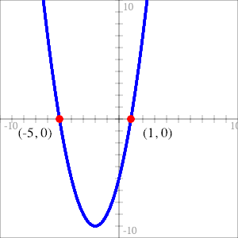
Figure 2:
Roots of \(f(x) = x^2 + 4x - 5\)
Example - The Simple Quadratic Formula
Find the roots of \(f(x) = x^2 +bx + c\).
First find \(x_{min}\),
\begin{align*} x_{min} = \frac{-b}{2}. \end{align*}Then find \(y_{min}\),
\begin{align*} y_{min} &= f(x_{min}) \\ &= \left(\frac{-b}{2}\right)^2 + b\left(\frac{-b}{2}\right) + c\\ &= \frac{b^2}{4} - \frac{b^2}{2} + c\\ &= \frac{b^2 - 2b^2}{4} + c\\ &= -\frac{b^2}{4} + c \end{align*}Then the roots are at,
\begin{align*} x &= x_{min} \pm \sqrt{-y_{min}}\\ &= -\frac{b}{2} \pm \sqrt{-\left(-\frac{b^2}{4} + c\right)}\\ &= -\frac{b}{2} \pm \sqrt{\frac{b^2}{4} - c}. \end{align*}This is the simple quadratic formula and it is—at least in my opinion—an even easier derivation than the one linked above with each term’s relationship to the function’s minimum made clear.
The Simplest Quadratic Formula (complex roots)
We got to equation (\ref{eq:simplest-quad-formula}) from the geometry of real roots. What about complex roots? Is it the same formula? Spoilers: yes. But let’s pretend we don’t know that.
The intuition is not so obvious in this case.
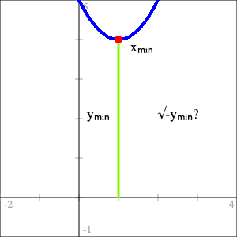
Figure 3:
The lack of geometric intuition for complex roots.
Pure Imaginary Inputs
Instead of just applying the formula to a function—say \(f(x) = x^2 - 2x + 5\)—and having it spit out an inexplicable complex answer that we don’t know how to interpret, let’s approach it from the other direction. Let’s extend \(f\) to the imaginary numbers: \(ai, \forall a \in \mathbb{R}\), and see if we learn anything useful.
We’ll start off nice and easy and see what happens for \(f(x) = x^2\). For a typical input \(ai\) we get,
\begin{align*} f(ai) = (ai)^2 = -a^2. \end{align*}I know, you’re shocked.
The point isn’t that this is a surprising result—because it isn’t—but rather about what it implies about imaginary and complex roots. I’ll graph it on the complex plane. Or at least a complex plane. I’m going to break a bit with tradition here: I want to graph inputs on the horizontal axis so, since I’m taking imaginary numbers as inputs, I’ll make the horizontal axis the imaginary axis and the vertical axis will still be the (real) y-axis. I’ll also overlay the real valued function on top for comparison.
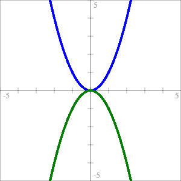
Figure 4:
The function \(f(x) = x^2\) with real inputs (blue)
and imaginary inputs (green).
The green parabola in Figure 4 is what I’m calling a “phantom parabola” because you don’t see it when you only graph real inputs/outputs of the function. In reality the two plots exist on separate planes. Since my horizontal axis is doubling as both the x-axis and the imaginary axis, it’s like adding a third dimension to the XY-plane and then folding it in on itself. You could plot it in 3D but it’s easier to see what’s going on when they’re drawn flat. It’s also much easier to sketch out by hand that way.
The important thing about phantoms is that—thanks to the imaginary unit, \(i\)—they always open in the opposite direction as the real parabola. So if the real parabola doesn’t cross the x-axis—doesn’t have real roots—the phantom does and vice versa. And remember, the phantom is actually crossing the imaginary axis because the inputs are imaginary. In other words the roots of the function aren’t imaginary simply because we’ve found the coefficient for the imaginary term. The roots are imaginary because they’re actually on the imaginary axis.
Geometric Interpretation of Imaginary Roots - The Phantom Parabola
Quadratic functions with purely imaginary roots can be thought of as having a “phantom”—or imaginary—parabola associated with it. For quadratic function \(f\) with minimum (or maximum) point at coordinates \((0, y_{min})\), the phantom is constructed by reflecting \(f\) across the line \(y = y_{min}\).
Then \(f\) has imaginary roots if and only if its phantom crosses the x-axis. The coefficients of the imaginary roots are the roots of the phantom.
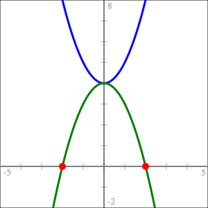 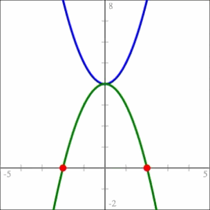
\(f(x) = x^2 + 4\) (blue) and its phantom (green)
with roots at \(x = \pm 2i\)
Complex Inputs
Alright, we’re getting there.
Imaginary inputs give us phantoms but what about complex inputs? Well we can consider pure imaginary inputs as complex inputs \(\alpha{} + \beta{}i\) with \(\alpha{} = 0\). So really the phantoms that we’ve seen so far represent just a “slice” of the entire function. Pick a different value of \(\alpha{}\), get a different slice.
Let’s look at \(f(x) = x^2\) again but this time with complex inputs and different values of \(\alpha{}\).
\begin{align*} f(\alpha{} + \beta{}i) &= (\alpha{} + \beta{}i)^2 \\ &= (\alpha{}^2 - \beta{}^2) + 2\alpha{}\beta{}i \end{align*}- Vector Plot
There are few different ways we can visualize this. The first thing I’ll do is represent the output as vectors.
Let
\begin{align*} p(\beta{}) &= 2\alpha{}\beta{},& \text{and}\\ q(\beta{}) &= \alpha{}^2 - \beta{}^2 \end{align*}for some fixed value of \(\alpha{}\). Then
\begin{align} \label{eq:complex-vectors} r(t) &= (p(t), q(t)),& \forall t \in \mathbb{R}. \end{align}I chose \(p\) and \(q\) the way I did because of how I chose my axes. The horizontal axis is my imaginary axis so I wanted the imaginary term as the x-coordinate for my vectors. Plotting those vectors we get this:
For \(\alpha{} + \beta{}i\) to be a root of \(f\) we need to find some vector in (\ref{eq:complex-vectors}) with both components equal to zero. What we’re looking for then is some slice—some value of \(\alpha{}\)—where the vector plot passes through the origin. Once we’ve found that we’ve got a value of \(\alpha\) for which there is some value of \(\beta{}\) which gives us the zero vector. The plot won’t tell us what \(\beta\) is but it will help us narrow in on the real part of the solution. For \(f(x) = x^2\) the plot of the vectors of \(r\) only passes through the origin when \(\alpha = 0\).
- Individual Plots
The next thing we can do is plot the real and imaginary parts of the output as separate functions.
The functions \(p(\beta) = 2\alpha{}\beta{}\) (red)
and \(q(\beta) = \alpha{}^2 - \beta{}^2\) (green)Since \(p\) is linear with slope \(2\alpha\), when \(\alpha = 0\) the slope is also zero and the line coincides with the x-axis. In fact, no matter what quadratic we start with, when its \(p\) function aligns with the x-axis, we’ve found \(\alpha\).
More imporantly though, when we find the correct value of \(\alpha\), \(q\) becomes the same phantom as the one in Figure 4 and its real roots, if it has them, are the coefficients of the imaginary terms in the roots of \(f\). If the phantom doesn’t have real roots then \(\alpha{}\) is a real root of \(f\).
Notice that, instead of considering \(q\) as a function of \(\beta\), we could consider it a function of \(\beta{}i\) without changing anything, since
\begin{align*} q(\beta{}i) = \alpha{}^2 + (\beta{}i)^2 = \alpha{}^2 - \beta{}^2. \end{align*}Doing that puts \(q\) back in complex territory with roots on the imaginary axis. I don’t think that’s necessary for building intuition but I do like that it’s an interpretation which is consistent with the previous section on pure imaginary inputs. But it’s probably simpler to just think of the imaginary parabola finding the coefficients of the imaginary parts of the roots.
- Generalizing
Okay that was, I think, a sufficiently thorough dissection of \(f(x) = x^2\) so let’s see what it looks like when it’s a bit more general.
Let \(f(x) = x^2 +bx + c\) and apply to \(x = \alpha{} + \beta{}i\).
\begin{align} f(\alpha{} + \beta{}i) &= (\alpha{} + \beta{}i)^2 + b(\alpha{} + \beta{}i) + c \nonumber \\ &= \alpha{}^2 - \beta{}^2 + 2\alpha{}\beta{}i + b\alpha{} + b\beta{}i + c \nonumber \\ &= \alpha{}^2 + b\alpha{} + c - \beta{}^2 + 2\alpha{}\beta{}i + b\beta{}i \nonumber \\ \label{eq:general-complex-solution} &= (f(\alpha{}) - \beta{}^2) + \beta{}(2\alpha{} + b)i \end{align}And then from (\ref{eq:general-complex-solution}) we can take
\begin{align} \label{eq:complex-p} p(\beta) &= \beta{}(2\alpha{} + b),& \text{and}\\ \label{eq:complex-q} q(\beta{}) &= f(\alpha) - \beta{}^2, \end{align}and generate the same kind of plots we did before. Notice from (\ref{eq:complex-q}) that since \(q\) doesn’t have a linear \(\beta\) term, the phantom will always be centered on the y-axis even if (real valued) \(f\) isn’t.
Example - Finding complex roots geometrically
Let \(f(x) = x^2 - 2x + 5\). Then
\begin{align*} p(\beta) &= \beta{}(2\alpha{} - 2),& \text{and}\\ q(\beta) &= \alpha{}^2 -2\alpha{} + 5 - \beta{}^2. \end{align*}As before we’ll take the set of vectors
\begin{align*} r(t) &= (p(t), q(t)),& \forall t \in \mathbb{R} \end{align*}and look for a slice of the function where \(r\), in purple, passes through the origin and/or where the slope of \(p\), in light blue, becomes zero.
Finding the complex roots of \(f(x) = x^2 -2x + 5\) geometrically.
\(f(x) = 0\) when \(x = 1 \pm 2i\).That was a long walk to get somewhere that, at the end of the day, isn’t all that complicated so I wouldn’t blame you if you’ve forgotten what I was trying to find. I wanted was to show that (\ref{eq:simplest-quad-formula}), “the simplest quadratic formula,” was valid for finding both real and complex roots of quadratics. To do that I need to show that \(\alpha{} = x_{min}\) which would mean \(f(\alpha) = y_{min}\).
Setting (\ref{eq:complex-p}) equal to zero gives two possibilities:
- \(\beta = 0\), which would correspond to a real solution, or
- \(2\alpha{} + b = 0\), giving \(\alpha = \frac{-b}{2}\) which is the definition of \(x_{min}\) we found in (\ref{def:x-min}).
Since \(\alpha = x_{min}\), \(\;f(\alpha) = y_{min}\). Then we can use (\ref{eq:complex-q}) to find \(\beta\).
\begin{align*} y_{min} - \beta{}^2 &= 0\\ \beta &= \pm \sqrt{y_{min}}. \end{align*}With both \(\alpha\) and \(\beta\) we have our complex roots at
\begin{align*} x &= \alpha \pm \beta{}i\\ &= x_{min} \pm i\sqrt{y_{min}}. \end{align*}Moving \(i\) inside the square root gives (\ref{eq:simplest-quad-formula}),
\begin{align*} x &= x_{min} \pm \sqrt{-y_{min}}. \end{align*}And with that we can fix Figure 3.
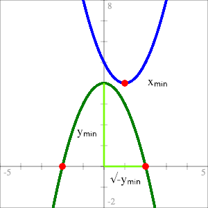
Complete Geometric Intuition
for the Solutions of Quadratic Functions
\(f(x) = x^2 + bx + c\)Geometric Interpretation of Complex Roots - The Phantom Parabola
A quadratic function can be thought of as having a “phantom”—or imaginary—parabola associated with it. For quadratic function \(f\) with minimum (or maximum) point at coordinates \((x_{min}, y_{min})\), the phantom is constructed by reflecting \(f\) across the line \(y = y_{min}\) and then translating so it’s centered on the y-axis.
Then \(f\) has complex (or purely imaginary) roots if and only if its phantom crosses the x-axis: The real part of the solution is \(x_{min}\); the coefficients of the imaginary parts are the roots of the phantom.
Finding complex roots by constructing the phantom for
\(f(x) = x^2 - 2x + 5\)
Loose Ends
Does it generalize?
All my examples have been of functions like \(f(x) = x^2 + bx + c\) but I’ve claimed that all quadratic functions have a phantom. Let’s prove that.
We know that given a quadratic \(f(x) = ax^2 + bx + c\), we can always arrange to have another one, \(g\), with the same roots.
\begin{align} \label{eq:equivalent-roots} g(x) &= \frac{f(x)}{a}. \end{align}Since (\ref{eq:equivalent-roots}) is a scaled version of \(f\) the horizontal position of its minimum doesn’t change so both \(f\) and \(g\) have the same \(x_{min}\) and therefore the same real part of their complex solutions. We find the imaginary terms by solving (\ref{eq:complex-q}) for \(g\).
Let \(q_g(\beta) = g(x_{min}) - \beta{}^2\). Then
\begin{align} g(x_{min}) - \beta{}^2 &= 0 \nonumber \\ \frac{f(x_{min})}{a} - \beta{}^2 &= 0,& \text{from } (\ref{eq:equivalent-roots}) \nonumber \\ \label{eq:q-sub-f} f(x_{min}) - a\beta{}^2 = 0. \end{align}We can take the left side of (\ref{eq:q-sub-f}) as a function, \(q_f\), with the same roots as \(q_g\).
\begin{align*} q_f(\beta) = f(x_{min}) - a\beta{}^2. \end{align*}The function \(q_f\) is precisely the phantom of \(f\) and since its roots are the same as \(q_g\text{'s}\), \(q_f\) also gives us the imaginary parts of \(f\text{'s}\) roots. So the intuition does hold for all quadratics.
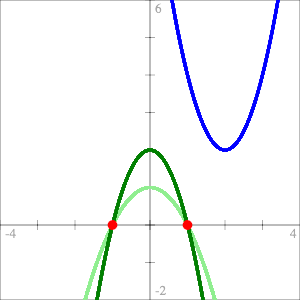
Figure 5:
Quadratic function \(f\) (blue), it’s phantom (dark green),
and the phantom of associated quadractic \(g\) (light green).
The Quadratic Formula
It won’t shock you to find out that we can also derive the (normal) quadratic formula again with the help of function \(g\), where
\begin{align*} g(x) = x^2 + \frac{b}{a}x + \frac{c}{a} \end{align*}First find \(x_{min}\). Since \(f\) and \(g\) have the same \(x_{min}\) we can use the formula we already have, which will work for \(g\), to find it.
\begin{align*} x_{min} &= \frac{-b}{2a}. \end{align*}Then we can find \(y_{min}\).
\begin{align*} y_{min} &= f(x_{min})\\ &= a\left(\frac{-b}{2a}\right) + b\left(\frac{-b}{2a}\right) + c\\ &= \frac{ab^2}{4a^2} - \frac{b^2}{2a} + c\\ &= \frac{ab^2 - 2ab^2 + 4a^2c}{4a^2}\\ &= \frac{-b^2 + 4ac}{4a} \end{align*}The roots are at
\begin{align*} x &= x_{min} \pm \sqrt{-g(x_{min})} \end{align*}which by (\ref{eq:equivalent-roots}) is
\begin{align} x &= x_{min} \pm \sqrt{\frac{-f(x_{min})}{a}} \nonumber \\ \label{eq:general-simplest-qf} &= x_{min} \pm \sqrt{\frac{-y_{min}}{a}} \\ &= \frac{-b}{2a} \pm \sqrt{-\frac{-b^2 + 4ac}{4a^2}} \nonumber \\ &= \frac{-b \pm \sqrt{b^2 - 4ac}}{2a} \nonumber \end{align}Equation (\ref{eq:general-simplest-qf}) is the general form of “the simplest quadratic formula” and it’s only very slightly less simple than (\ref{eq:simplest-quad-formula}).
As with the simple quadratic formula you can see that the whole mess of terms actually means something geometrically. The first part, \(\frac{-b}{2a} = x_{min}\) and the second part, \(\frac{\sqrt{b^2 - 4ac}}{2a} = \sqrt{\frac{-y_{min}}{a}}\).
The Phantom’s Fangs
Another way to plot the functions from (\ref{eq:general-complex-solution}) is to plot the vectors’ magnitudes. Then we have a plot that’s positive everywhere except at the roots where it equals zero. When you get close to the correct value of \(\alpha\), the graph starts to point directly at the correct values of \(\beta\).
Finding \(\alpha\) and \(\beta\) for \(f(x) = x^2 + 4x + 13\)
Higher Order Polynomial Functions
Of course there’s no reason why this approach can’t be extended to higher order polynomial functions. We can always generate a pair of functions as in (\ref{eq:general-complex-solution}) and plot them. For some polynomial function \(f\) of order \(m\) we can represent \(f\) as the Taylor Series of \(f\) extended to the complex numbers. Although I’ll write it a bit differently than you might expect in order for it to be in terms of \(\alpha\) and \(\beta\).
\begin{align} \label{eq:complex-taylor} f(\alpha{} + \beta{}i) &= \sum_{n=0}^m \frac{f^{(n)}(\alpha)(\beta{}i)^n}{n!} \end{align}Where \(f^{(n)}(\alpha)\) is the \(n\text{th}\) derivative of \(f\) evaluated at \(\alpha\).
All the even terms of (\ref{eq:complex-taylor}) make up the real part of the solution—what I’ve previously called \(q(\beta)\)—and all the odd terms make up \(p(\beta)\) or the imaginary part. These aren’t nearly as intuitive though.
In general the imaginary parts of the roots are found where \(p\) and \(q\) intersect both with each other and the x-axis. The phantom idea works with quadratics because \(p\) is linear and aligns with the x-axis when we have the correct value of \(\alpha\). The points where \(q\) intersects \(p\) and where \(q\) intersects the x-axis are the same so we can ignore \(p\) for the purposes of building intuition and concentrate on the “phantom.”
For higher order polynomials, neither \(p\) nor \(q\) will be linear—from (\ref{eq:complex-taylor}) it’s clear that one will always be of order \(m\) and the other of order \(m\) minus one—so we can’t ignore it. That and the fact that higher order functions just have more roots makes it much less obvious how to go about constructing the “phantoms.”
But they’re still fun to look at so here are the various graphs for \(f(x) = x^5 - 1\).
Graphically Approximating the 5ᵗʰ roots of unity
\begin{align*} p(\beta) &= \beta{}^5 - 10\alpha{}^2\beta{}^3 + 5\alpha{}^4\beta{}& \text{(light blue)}\\ q(\beta) &= 5\alpha{}\beta{}^4 - 10\alpha{}^3\beta{}^2 + \alpha{}^5 - 1& \text{(green)}\\ r(t) &= (p(t), q(t)), \forall t \in \mathbb{R}& \text{(dark purple)}\\ m(t) &= |r(t)|, \forall t \in \mathbb{R}& \text{(light purple)} \end{align*}
Geometric Algebra
I’ve been playing around with geometric algebra (GA) lately which is part of what prompted me to consider a geometric interpretation of complex roots. So when I started exploring this I was doing it in GA. I decided to stick to complex numbers because that’s what most people are familiar with and people learning it for the first time probably don’t want to learn GA on top of it. There’s not much difference between the two approaches but GA does make one thing more clear.
I won’t go into the details of GA here but, briefly, when I did similar derivations to the ones above I ended up with this thing which is a 2D multivector.
\begin{align*} f(\alpha{} + \beta{}e_{12}) = \alpha{} + \beta{}e_{12} + \beta(2\alpha{} + b)e_1 + (f(\alpha) - \beta{}^2)e_2. \end{align*}In GA, \(e_{12}\) is called the unit bivector and \((e_{12})^2 = - 1\) making it the GA equivalent of \(i\). Similarlly, \(\alpha + \beta{}e_{12}\) is the GA equivalent of a complex number while \(e_1\) and \(e_2\) are the unit basis vectors of the 2D space: basically the \(\overrightarrow{x}\) and \(\overrightarrow{y}\) unit vectors. When we fix \(\alpha\) at some value we can interpret the other three components as a 3D vector:
\begin{align*} v = \beta{}(2\alpha{} + b)\overrightarrow{x} + (f(\alpha) - \beta{}^2)\overrightarrow{y} + \beta{}\overrightarrow{z}, \nonumber \\ \end{align*}with \(\overrightarrow{z}\) being the imaginary axis. We can represent the coefficients as functions of \(\beta\):
\begin{align*} v = p(\beta)\overrightarrow{x} + q(\beta)\overrightarrow{y} + r(\beta{})\overrightarrow{z} \end{align*}The \(\overrightarrow{x}\) and \(\overrightarrow{y}\) components are just the real and imaginary parts of (\ref{eq:general-complex-solution}). In the complex case I interpreted those as vectors but here in GA-land they actually are the coefficients of the (real) 2D vectors. The three graphs from the section on Complex Inputs are generated by taking every pairing of \(p, q\) and \(r\) and plotting them parametrically. And what the GA approach makes clear that the complex number approach doesn’t, in my opinion, is that each of them is just a 2D projection of a set of 3D—or 4D if you want to count \(\alpha\)—vectors. Each actually sits on a separate plane.
That’s the real reason why I chose the horizontal axis to double as the imaginary axis when I was exploring Pure Imaginary Inputs. The function \(q\), which gives us the phantom, is the \(\overrightarrow{y}\) component of that 3D vector. When plotting it against the \(\overrightarrow{z}\) (imaginary) component, the vertical axis is already spoken for, so the imaginary axis has to be horizontal by default. But by the same argument, when I plot \(p\) the imaginary axis ends up being vertical. That results in a slightly different plot than we saw before because previously I had rotated it 90° to make the intersections of \(p\) and \(q\) obvious. But with the full picture we can see what’s really going on.
Phantom Plots for \(f(x) = x^2 - 2x + 5\) at \(\alpha = 1\)
With the complex numbers approach I had to be a bit hand-wavy about how we could think about the imaginary roots being on the imaginary axis. In this approach there’s nothing to justify. The imaginary roots simply are on the imaginary axis and there’s nowhere else they could be.
Phantoms Plots for \(f(x) = x^5 - 1\)